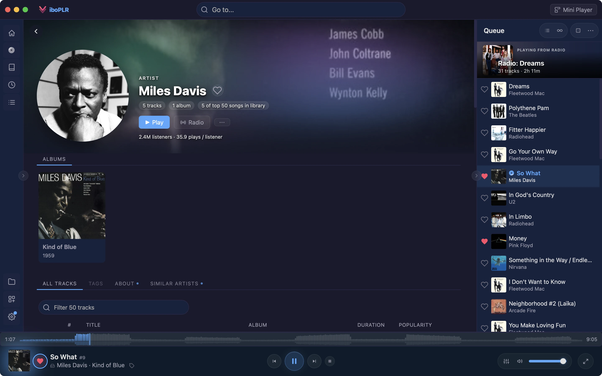

Viboplr plays your lossless library through a native engine, takes your DAC for itself when you ask, and tells you honestly whether what reaches it is bit-perfect.

Bit-perfect needs the whole chain to leave your samples alone. Instead of a checklist, Viboplr has one switch in the player bar. It pins your output device, takes exclusive access to it, sets the equalizer, ReplayGain and speed aside, holds the volume at 100% and lets the device follow each track’s sample rate.
Viboplr’s default engine is libmpv, the playback core of the mpv media player, bundled with every copy. It decodes FLAC, ALAC, Opus and the rest natively, with no transcoding along the way.
Live albums and continuous mixes play the way they were mastered: with crossfade off, the next track starts the instant the current one ends, sample-accurate on the native engine. Prefer a blend for playlists? Crossfade runs up to 10 seconds.
Not every session is about purity. The equalizer has a Simple mode — Bass and Treble plus one-tap presets — and an Advanced mode with a handle per band, your own saved presets and a pre-gain slider.
Free, open source, and built end-to-end with an AI assistant — every feature, every detail.